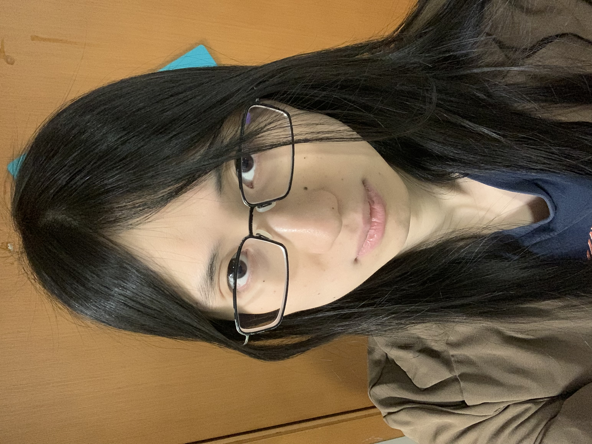
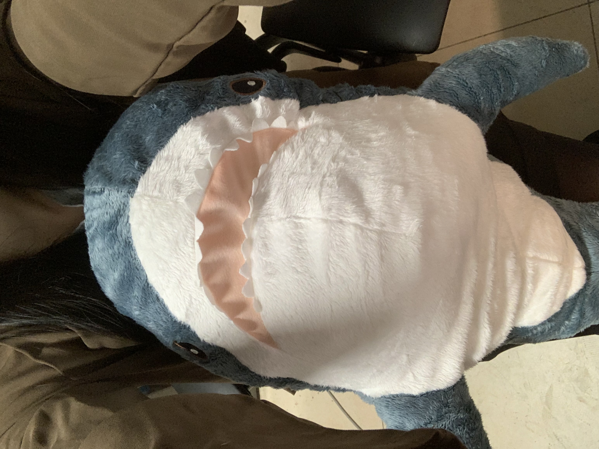

|
 |
Yunsheng Shana LiMaster Student at Department of Mathematics Southern University of Science and Technology Advisor: Stavros Garoufalidis Phone: +86 173-1125-2842 Email: 12232850mail.sustech.edu.cn Pronoun: She/Her |
 |
| Title | Year |
| Notes of Zelmanov's Algebraic Lectures | 2023 |
| Taken by me based on the contents of the lectures given by Prof. Efim Zelmanov in 2023 Spring at SUSTech. The topics include Groebner-Shirshov bases theorem, Wreath product, Burnside's problems, rings of fractions and ultraproducts. | |
| A Review From Manifolds to Basic de Rham Theory | 2021 |
| A quick and compact review of basic notions of smooth manifolds and a beginning of de Rham theory, which served as a preliminary material in the reading seminar of Bott & Tu's Differential Forms in Algebraic Topology. | |
| Title | Year |
| Proposal: On the Quantum Modularity Conjecture for Knots | 2023 |
| My graduate thesis proposal. | |
| Foundation of Supergeometry and Its Application in Mathematical Physics | 2022 |
|
My undergraduate graduation thesis. Abstract: Supergeometry is a natural extension of the theory of differential geometry, which enjoys values on its own right as a purely mathematical object, and also turns out to be useful in physics: it gives a model of spacetime that unifies quantum science and gravity, the string theory. The first part of this thesis gives a detailed and mathematically strict introduction to supergeometry, rearranged from the lecture notes by Covolo and Poncin, the paper of Leites and the notes by Deligne and Morgan. The second part focuses on an explicit discussion on the important example SMan(R^{0|δ},X) and outlines a corresponding proof of the Chern-Gauss-Bonnet theorem, following Berwick-Evans’ work. |
|
| Event | Year |
| Teaching assistant of MA109 (Advanced Linear Algebra). | 2022 |
| Reading seminar of Bott&Tu's Differential Forms in Algebraic Topology. Homepage | 2021 |
| Reading seminar of Riehl's Category Theory in Context. | 2019 |
| Piano Performances | Year |
| Debussy: Rêverie, L. 68 at Steinway Garden in Shenzhen Concert Hall | 2023 |
| Zhangshuai: Three Preludes, No.1 at Shenzhen Concert Hall | 2022 |
| Zhangshuai: Three Preludes, No.1 at Steinway Garden in Shenzhen Concert Hall | 2021 |
| Lang Lang's Piano Masterclass at SUSTech 10th Anniversary | 2020 |
| Haochen Zhang's Piano Masterclass | 2019 |